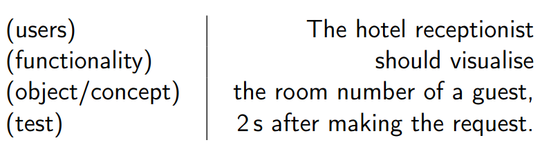
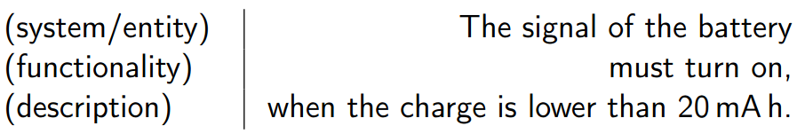

Teórica 05
Escrever numa Linguagem Natural
Template para um Documento de Requisitos
Necessita de uma estrutura
- A equipa do projeto é responsável pela edição do documento de requisitos;
- É uma atividade que necessita de um grande cuidado, nomeadamente relativo aos detalhes do documento;
- A definição de um template genérico para este tipo de documentos revela-se um aspeto importante, tendo em conta a existência de um largo número de engenheiros de sistemas e de projetos;
- Sem um template, os graus de liberdade seriam excessivo, permitindo que os documentos fossem muito diferentes de caso para caso;
- Muito útil, sobretudo, para sistemas muito complexos.
Estrutura Genérica

Guias para a Escrita
Escrita de Requisitos
- Os requisitos devem ser escritos em linguagem natural;
- Não é expectável que todos os stakeholders sejam capazes de interpretar corretamente especificações de requisitos formais;
- A escrita de requisitos precisa de treino e prática, de forma a ser aperfeiçoada.
Pontos a Considerar
Escrita Técnica
- A escrita de requisitos deve obedecer às regras básicas da escrita técnica;
- A linguagem usada deve ser simples, clara e precisa;
- As palavras escolhidas não devem ter outras possíveis interpretações;
- A escrita técnica deve ser impessoal, objetiva, clara, respeituosa e formal.
Formato standard para requisitos de utilizador
- Assunto que indica o tipo de utilizadores que irá beneficiar desse requisito;
- Resultado que se deve alcançar no caso de se cumprir o requisito;
- Um mecanismo que permita efetuar testes ao requisito definido.

User Stories
- Certos métodos agile propõem a adoção de um formato diferente.
- Uma user story é uma descrição simples e curta da funcionalidade, feita na perspetiva da pessoa que precisa dela;
- É materializada segundo um conjunto de frases que descrevem o que é que os utilizadores necessitam;
- Formato:
- "Como um <tipo do utilizador>, pretendo <objetivo> porque <razão>.".
- Este formato coloca o utilizador como o foco principal e facilita a identificação das fontes.
Formato standard para requisitos de sistema
- Assunto, seja o sistema sobre desenvolvimento ou a entidade de design relacionada ao requisito;
- Resultado que se deve alcançar no caso de se cumprir o requisito.

Formato standard para requisitos não funcionais
- O sistema em desenvolvimento ou a entidade de design relacionada ao requisito;
- A qualidade que deve ser alcançada com o requisito;
- Exemplos:
- O produto deve ser fácil de utilizar por pessoas iliteradas;
- O produto deve continuar a funcionar 30m debaixo de água...
Frases Curtas e Simples
- Cada requisito deve ser representado por uma frase e cada frase deverá representar apenas um requisito;
- O objetivo é que se tenha todos os requisitos escritos de forma clara e, para isso, devem utilizar-se frases curtas e simples;
- As frases devem ser afirmativas e escritas numa voz ativa;
- Referências a outros documentos devem ser evitadas.
Vocabulário Limitado
- Deve evitar-se a utilização de termos que podem criar confusão, especialmente sinónimos de conceitos importantes;
- Acrónimos e abreviações devem ser utilizados com muito cuidado;
- Deve evitar-se a utilização de sinónimos, mesmo que isso faça o texto repetitivo.
Ambiguidade
- As situações de ambiguidade devem ser corrigidas, com o objetivo de tornar uma frase o mais clara mais possível;
- De forma a deixar certas frases mais completas, estas podem ter como acrescento outras materiais como tabelas, figuras ou esquemas;
- A ambiguidade também é manifestada quando dois, ou mais, requisitos entram em choque;
- Uma das possíveis resoluções é através de técnicas de negociação.
Terminologia Vaga
- Deve evitar-se a utilização de expressões informais demasiado vagas para descrever características desejáveis de um sistema.
- Por exemplo: fácil de usar, fácil de aprender, versátil, flexível, intuitiva, etc...
- Deve complementar-se o requisito com critérios passíveis de verificação.
Ilusões e Fantasias
- Em casos de engenharia, nenhum componente é perfeito, assim, devemos evitar almejar características impossíveis;
- A equipa do projeto deverá ter uma atitude realista, rejeitando qualquer requisito irrealista;
- Não usar: 100% fiável, totalmente segura, nunca falha, satisfaz todos os utilizadores, é capaz de lidar com situações impresíveis.
Múltiplos Requisitos
- Requisitos que contêm conjunções de coordenação são muito suscetíveis à criação de situações ambíguas;
- Evitar a utilização de FANBOYS (for, and, nor, but, or, yet, so);
- Nestes casos a solução é separar o requisito em múltiplos requisitos mais simples.
Design
- Deve-se evitar dizer como é que o sistema irá satisfazer um dado requisito, visto isto restringir as possíveis soluções e entrar em demasiado detalhe no requisito de forma prematura;
- O foco do processo de escrita deve ser nas funcionalidades que a aplicação deverá providenciar ao utilizar;
- A referência a nomes de componentes, materiais, campos de bases de dados ou aspetos técnicos deve ser evitada.
Planos de Projeto
- Os planos de projeto e o seu agendamento são aspetos importantes a considerar, no entanto, estes não devem ser inseridos no documento de requisitos;
- Não devem existir referências a datas, fases ou atividades do projeto (esta informação deve estar no plano do projeto).